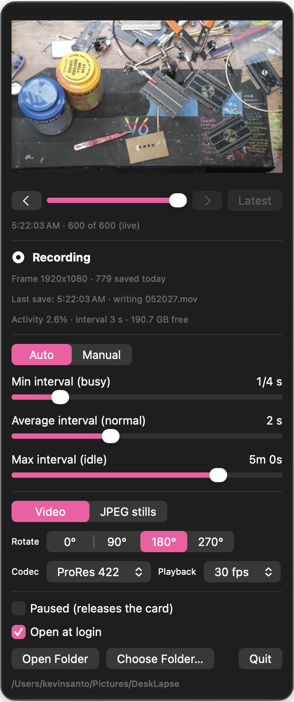

DeskLapse
1 November 2026 · Kevin Cappuccio · live doc on claude.ai · companion to the 4K capture card writeup
I wanted a time-lapse of my bench that just runs. All day, every day, no shutter sound, no remembering to press record, and nothing that dies when I shut the laptop. The capture card from the other writeup was already pointed at the desk, so I had Claude Code write a tiny menu bar app that eats frames from it. This is what it does and the handful of things that were harder than they looked.
- A macOS menu bar app, one Swift file, no Xcode. Opens at login, grabs 4K frames from the capture card, saves them as a video (or JPEGs) into a dated folder.
- The interval adapts to how much is moving on the bench. Three sliders: the shortest interval when it's busy, the longest when it's idle, and what "normal" should be. Or set a fixed interval, anywhere from one frame per hour down to 24 a second.
- The video is crash-safe. Close the lid, kill the app, pull the plug: you lose at most one frame.
- It shares the card with OBS. When OBS launches, DeskLapse hands over the card and keeps recording on whatever OBS picked.

Why not OBS?
OBS has no interval capture, the macOS screenshot tool plays a shutter sound every time, and I wanted the thing to notice when I'm actually doing something. Watching the frames yourself is the only way to do that, so it's its own AVFoundation session. It turns out two apps can read the same USB camera on macOS. Only the first one to open it gets to pick the format, which is why there's an OBS handoff.
How the auto interval works
Every frame, it samples a 240×135 grid of luma values and counts how many moved by more than 12 levels since the last frame. Not the average difference: the A7S is a real sensor and its noise would read as constant activity. A changed-pixel fraction ignores noise and lights up for hands, tools and parts. That fraction is smoothed over five seconds and mapped onto your three sliders:
activity ≤ 0.3% → max interval (nobody's here)
activity = 3% → average interval
activity ≥ 30% → min interval (hands everywhere)
in between → log-log interpolationSo the "average" slider is literally the interval you get during normal desk work, and busy or idle stretches slide toward the other two. The thresholds are constants in the source; if your camera is further from the action they're the first thing to tune.
The crash-safe video trick
JPEGs are trivially crash-safe: each file is its own thing. A video file isn't. A normal MOV is unreadable until the writer finalizes it, so a crash at 4 pm loses the whole day. The fix is QuickTime movie fragments: tell AVAssetWriter to write a fragment after every frame, and the file on disk is always valid up to the last fragment.
Three things bit us on the way there:
- The fragment interval is in movie time, not wall time. A time-lapse frame is 1/30 s of movie, so "every 10 seconds" meant every 300 captured frames, about fifteen minutes of nothing on disk. One frame per fragment it is.
- HEVC with frame reordering holds frames back until it has seen the future. Turn reordering off and the encoder emits each frame as it comes.
- Even then the writer sits on the newest frame until the next one arrives, no matter how you feed it. So a hard crash loses exactly one frame. A normal quit or shutdown loses nothing.
Fragmented movies are also a thing Premiere handles badly, and it turns out finishWriting leaves the fragments in. So every segment gets losslessly remuxed into a flat MOV when it closes, and anything a crash left behind gets the same treatment on the next launch. Segments roll over every hour or 2 GB so that remux never needs much free disk.
Odds and ends
- The squeezed mode. If OBS has the card in its 1920×2160 mode, frames arrive at half width. The app stretches them back to 3840×2160 on the way out, so everything it saves is 16:9.
- Rotation. JPEGs get rotated pixels. Video gets a rotation matrix in the track header, same as an iPhone, which Premiere and QuickTime honour and costs nothing.
- Preview. The panel keeps the last 600 captures as thumbnails. It opens on the newest and you can scrub back through the day.
- Disk guard. It stops saving at 3 GB free instead of filling the boot drive. ProRes 422 at 4K is about 2.3 MB a frame, so at a 10 second cadence that's 20 GB a day. HEVC is a fraction of that.
- Open at login is one call to
SMAppService. The catch is signing: an ad-hoc signed app gets a fresh identity every build, so macOS asks for camera permission every time you rebuild. Signing with a real Developer ID certificate makes the permission stick. - No Xcode. It builds with
swiftcfrom the command line tools. One gotcha:@Stateis a macro in the current SDK and the command line toolchain can't load it, so the UI state lives in the engine as@Publishedproperties instead.
Build it yourself
It's about 600 lines of Swift plus a 15 line build script. Edit main.swift, run build.sh, and it compiles, bundles, signs and relaunches. Tune the constants at the top of the file for your camera and bench. The source isn't on GitHub yet. Ask me and I'll send it.
swiftc -O -swift-version 5 -parse-as-library -target arm64-apple-macos14.0 main.swift -o DeskLapse
codesign -s "Developer ID Application: …" --force DeskLapse.appTo turn a day of JPEGs into a movie: ffmpeg -framerate 30 -pattern_type glob -i '*.jpg' -c:v prores_videotoolbox out.mov. In video mode you don't need to do anything, the segments are already movies.
Part of the 4K capture card project. Built with Claude Code, 3 October 2026.